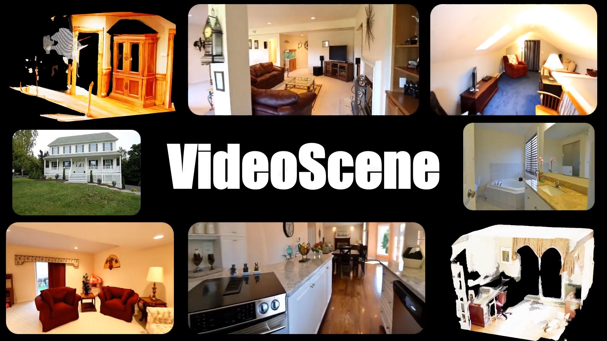
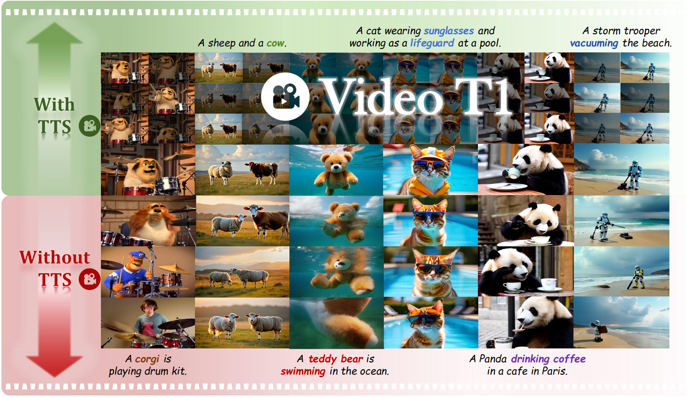
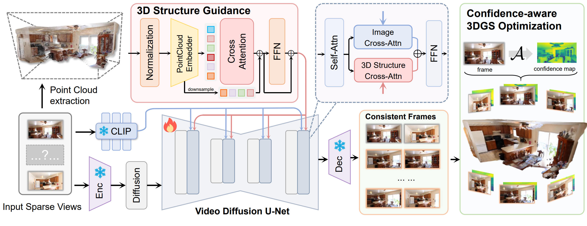

|
Hanyang Wang | 汪晗阳 I'm currently an undergraduate student in the Department of Computer Science and Technology at Tsinghua University. I'm also serving as an intern working closly with Prof. Yueqi Duan and Fangfu Liu. My research interests lie in 3D Computer Vision and AIGC. |

|
Research
* indicates equal contribution. Some papers are highlighted. |
|  |
Hanyang Wang*, Fangfu Liu*, Jiawei Chi, Yueqi Duan IEEE/CVF Conference on Computer Vision and Pattern Recognition (CVPR), 2025 Highlight [arXiv] [Code] [Project Page] In this paper, we propose VideoScene to distill the video diffusion model to generate 3D scenes in one step, aiming to build an efficient and effective tool to bridge the gap from video to 3D. |
|  |
Fangfu Liu*, Hanyang Wang* , Yimo Cai, Kaiyan Zhang , Xiaohang Zhan , Yueqi Duan Arxiv, 2025 [arXiv] [Code] [Project Page] We present the generative effects and performance improvements of video generation under test-time scaling (TTS) settings. The videos generated with TTS are of higher quality and more consistent with the prompt than those generated without TTS. |
|  |
Fangfu Liu*, Wenqiang Sun* , Hanyang Wang* , Yikai Wang , Haowen Sun , Junliang Ye , Jun Zhang , Yueqi Duan Arxiv, 2024 [arXiv] [Code] [Project Page] In this paper, we propose ReconX, a novel 3D scene reconstruction paradigm that reframes the ambiguous reconstruction challenge as a temporal generation task. The key insight is to unleash the strong generative prior of large pre-trained video diffusion models for sparse-view reconstruction. |

|
Fangfu Liu*, Hanyang Wang* Shunyu Yao , Shengjun Zhang, Jie Zhou, Yueqi Duan Arxiv, 2024 [arXiv] [Code] [Project Page] In this paper, we propose Physics3D, a novel method for learning various physical properties of 3D objects through a video diffusion model. Our approach involves designing a highly generalizable physical simulation system based on a viscoelastic material model, which enables us to simulate a wide range of materials with high-fidelity capabilities. |

|
Kailu Wu , Fangfu Liu, Zhihan Cai, Runjie Yan, Hanyang Wang, Yating Hu, Yueqi Duan , Kaisheng Ma Conference on Neural Information Processing Systems (NeurIPS), 2024 [arXiv] [Code] [Project Page] In this work, we introduce Unique3D, a novel image-to-3D framework for efficiently generating high-quality 3D meshes from single-view images, featuring state-of-the-art generation fidelity and strong generalizability. Unique3D can generate a high-fidelity textured mesh from a single orthogonal RGB image of any object in under 30 seconds. |

|
Fangfu Liu, Hanyang Wang, Weiliang Chen, Haowen Sun, Yueqi Duan European Conference on Computer Vision (ECCV), 2024 [arXiv] [Code] [Project Page] We introduce a novel 3D customization method, dubbed Make-Your-3D that can personalize high-fidelity and consistent 3D content from only a single image of a subject with text description within 5 minutes. |
|
|